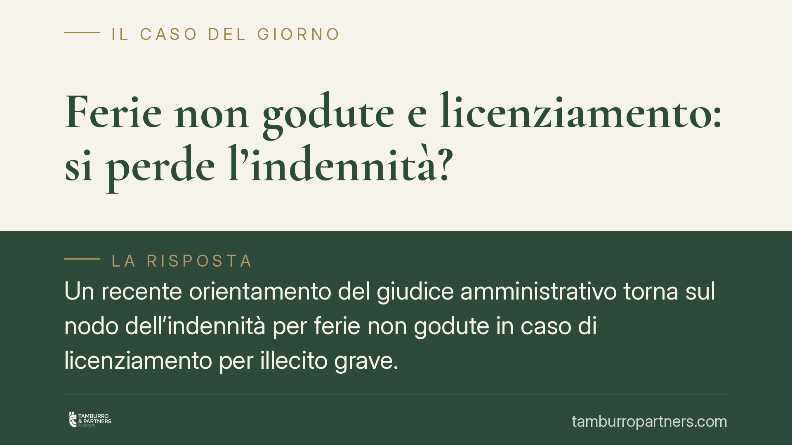

Ferie non godute e licenziamento: si perde l'indennità?
Un recente orientamento del giudice amministrativo torna sul nodo dell'indennità per ferie non godute in caso di licenziamento per illecito grave. La questione non è solo tecnica: incide sul reddito del lavoratore e sui conti dell'ente. Si intreccia con l'art. 36 Cost. e con il diritto dell'Unione. Analizziamo cosa cambia e cosa verificare.

Il fatto in sintesi
La domanda ricorre spesso: se il rapporto di lavoro cessa e restano giorni di ferie maturati e non fruiti, il lavoratore può chiedere il pagamento dell'equivalente economico? La regola generale è affermativa. Ma quando la cessazione dipende da un licenziamento per illecito disciplinare grave, alcune pronunce del giudice amministrativo hanno negato l'indennità sostitutiva.
Avvertenza sulla fonte. Alla data di redazione, la sentenza del Consiglio di Stato citata dalla stampa specializzata (indicata come n. 2909/2026) non risulta verificabile nella sua identificazione completa – numero, Sezione e data di deposito. Prima di fondare qualsiasi scelta operativa su questa pronuncia, occorre attendere e consultare il testo ufficiale sul sito della Giustizia amministrativa. Trattiamo quindi il principio in astratto, non come precedente consolidato.
Inquadramento normativo
Il diritto alle ferie ha copertura costituzionale: l'art. 36, comma 3, Cost. lo qualifica come irrinunciabile. La ratio è il recupero psico-fisico del lavoratore, non la monetizzazione. Per questo, in linea di principio, le ferie vanno godute e non convertite in denaro durante il rapporto.
Alla cessazione del rapporto, però, il godimento in natura non è più possibile. Qui interviene l'indennità sostitutiva: il diritto alle ferie residue si trasforma in credito economico. Su questa conversione è centrale il diritto dell'Unione. L'art. 7 della direttiva 2003/88/CE garantisce almeno quattro settimane di ferie annuali. La Corte di giustizia UE ha chiarito che il diritto non si estingue automaticamente se il lavoratore non è stato messo in condizione di fruirne: si vedano C-684/16 (Max-Planck) e C-214/16 (King). Il datore ha un onere di diligenza: deve invitare il lavoratore a fruire delle ferie e informarlo delle conseguenze.
Il punto controverso è l'imputabilità della mancata fruizione. Se il dipendente non ha goduto le ferie per una condotta a lui addebitabile – ad esempio l'assenza dal servizio che ha portato al licenziamento – alcuni giudici escludono l'indennità. L'orientamento opposto, di matrice eurounitaria, obietta che il diritto alle ferie tutela la salute e non può essere trasformato in una sanzione economica accessoria.
Implicazioni pratiche
Per il dipendente, l'esito non è scontato. Se la mancata fruizione è realmente non imputabile (organizzazione del servizio, carichi di lavoro, mancato invito del datore), la posizione per ottenere l'indennità è più solida. Se invece la mancata fruizione discende da condotte proprie sanzionate con il licenziamento, il diritto è esposto a contestazione.
Per l'amministrazione, la tentazione di negare in automatico l'indennità è rischiosa. La giurisprudenza UE impone di verificare se il lavoratore sia stato posto in condizione di fruire delle ferie. Un diniego non motivato su questo profilo può essere ribaltato in giudizio.
Resta poi il tema temporale. I crediti retributivi si prescrivono in cinque anni (art. 2948, n. 4, c.c.). Secondo l'orientamento consolidato, per i rapporti privi di stabilità reale la prescrizione decorre dalla cessazione del rapporto, non in costanza dello stesso. Il computo va valutato caso per caso, ma il rischio di decadenza è concreto: agire in ritardo può azzerare il credito a prescindere dal merito.
Cosa fare in concreto
Se sei un lavoratore:
- Ricostruisci per iscritto le ferie maturate e non godute, con prospetto e buste paga alla mano.
- Verifica se e quando il datore ti ha invitato a fruire delle ferie: l'assenza di sollecito rafforza la tua posizione secondo la giurisprudenza UE.
- Agisci nei termini: calcola la prescrizione quinquennale (art. 2948, n. 4, c.c.) dalla cessazione del rapporto, senza attendere.
Se sei un'amministrazione o un datore:
- Prima di negare l'indennità, documenta gli inviti alla fruizione e l'informativa sulle conseguenze della mancata fruizione.
- Motiva ogni diniego sul profilo dell'imputabilità, misurandolo con i principi delle sentenze Max-Planck e King.
Consigliamo di valutare ogni situazione sui documenti concreti, perché l'esito dipende dai fatti specifici e dall'evoluzione giurisprudenziale, ancora non uniforme.
Disclaimer
Contributo informativo a cura di Tamburro & Partners - Avv. Giuseppe Tamburro. Non costituisce parere legale.
Ogni storia di lavoro ha i suoi tempi.
Se gestisci HR e vuoi un confronto su contenzioso, ispezioni o licenziamenti, scrivi allo studio. Ti rispondiamo entro un giorno lavorativo.